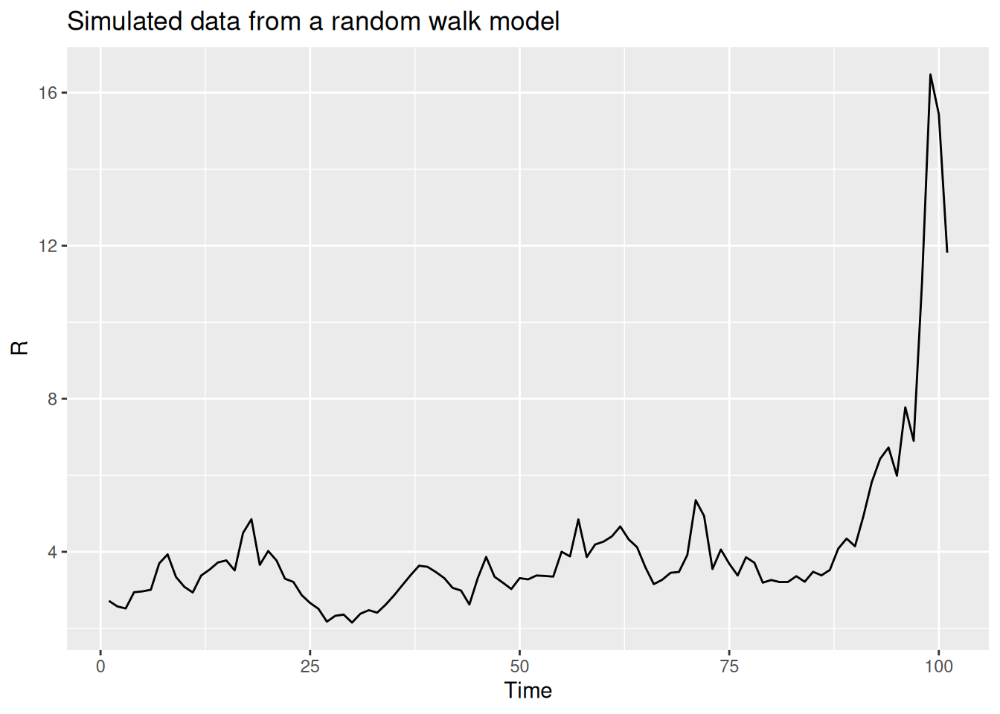
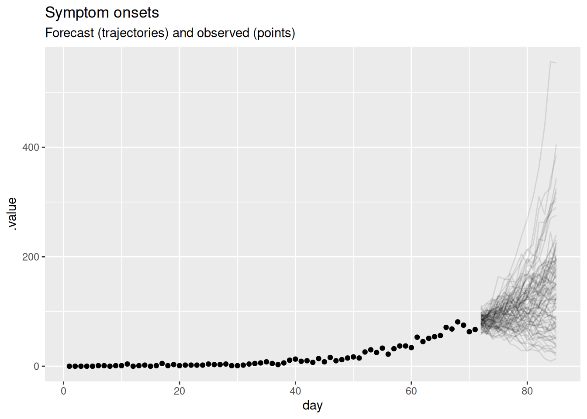
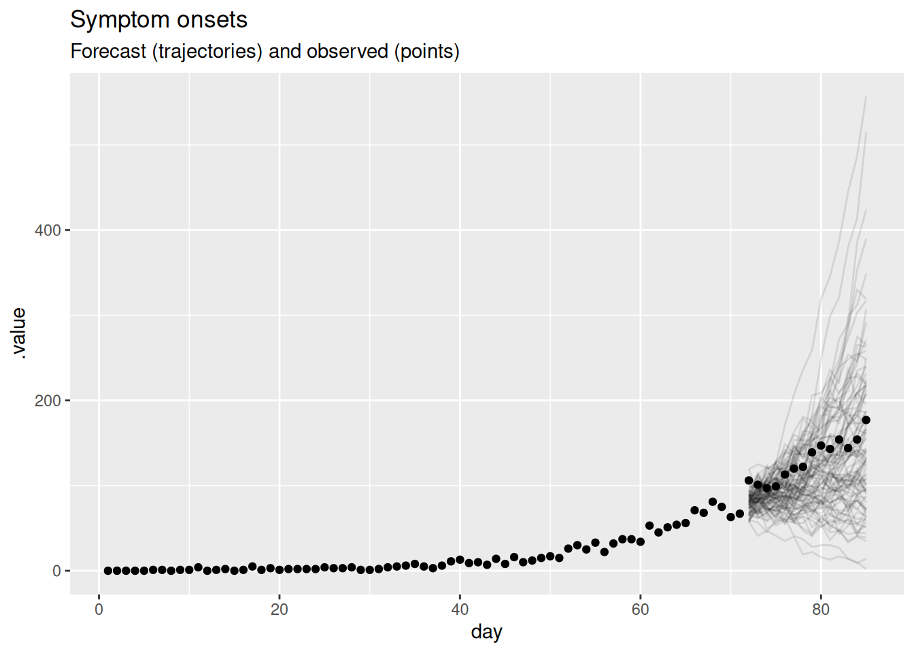
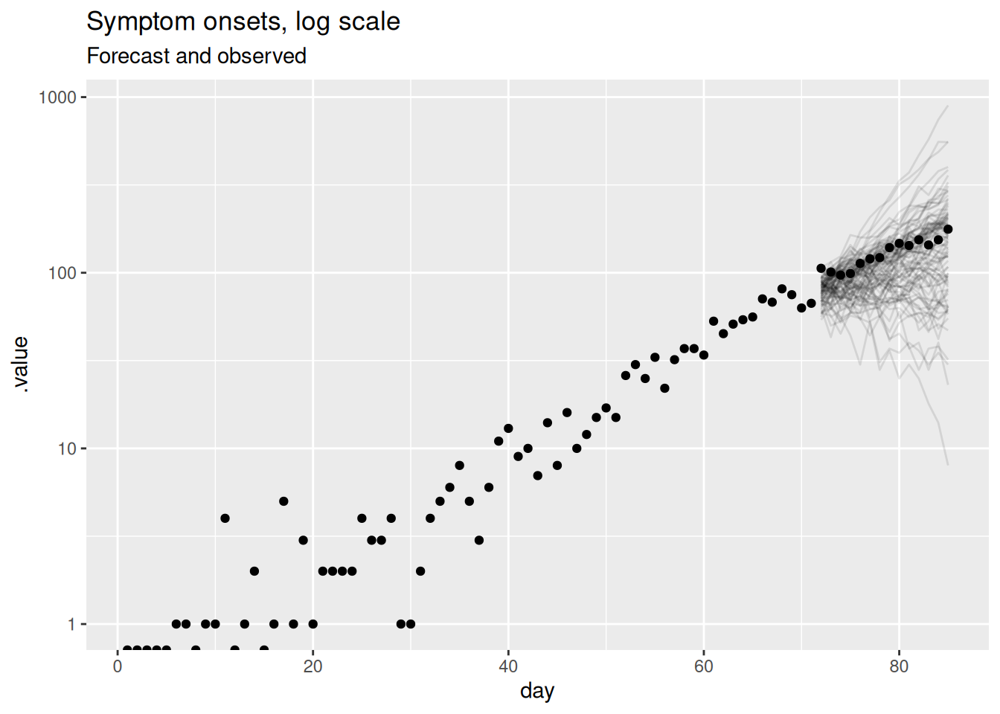
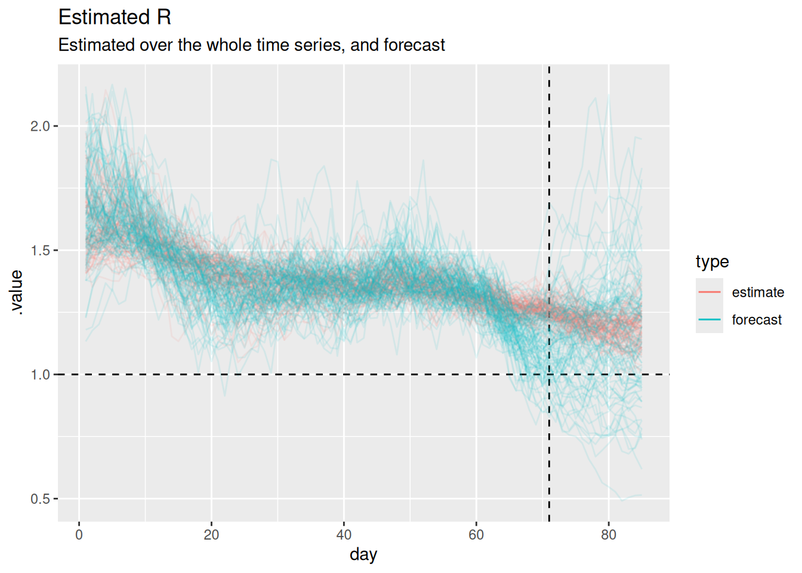
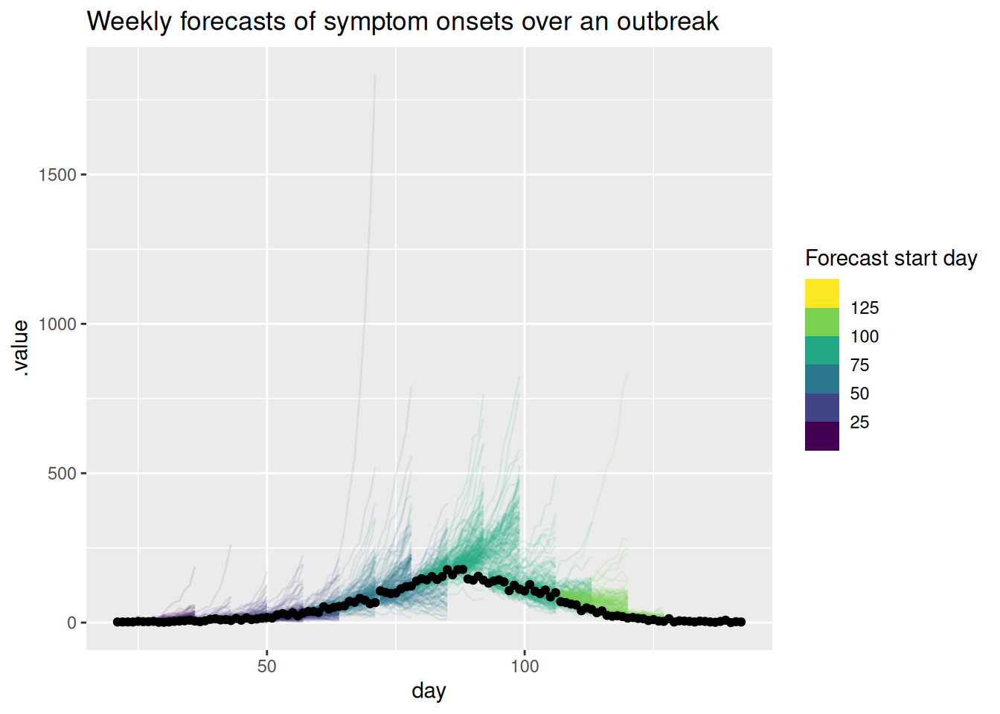
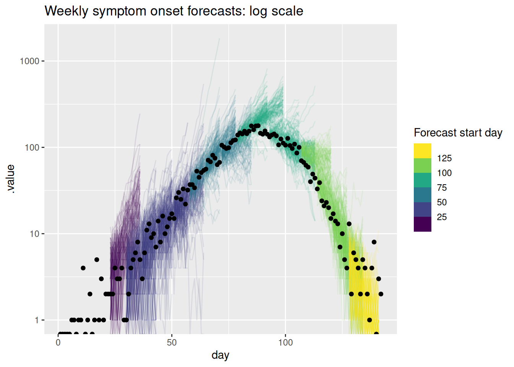

library("iddconf2026")
library("dplyr")
library("ggplot2")Forecasting concepts and visualisation
Introduction
Epidemiological forecasts are probabilistic statements about what might happen to population disease burden in the future. In this session we will look at some simple forecasts made using a commonly used infectious disease model, based on the renewal equation. We will see how we can visualise such forecasts, and visually compare them to what really happened.
Slides
Objectives
The aim of this session is to introduce the concept of forecasting and forecast visualisation using a simple model.
NoteSetup
Source file
The source file of this session is located at sessions/forecasting-concepts.qmd.
Libraries used
In this session we will use the iddconf2026 package to load a data set of infection times and corresponding forecasts, the dplyr package for data wrangling and the ggplot2 library for plotting.
Tip
The best way to interact with the material is via the Visual Editor of RStudio.
Initialisation
We set a random seed for reproducibility. Setting this ensures that you should get exactly the same results on your computer as we do.
set.seed(123)What is forecasting?
Forecasting is the process of making predictions about the future based on past and present data. In the context of infectious disease epidemiology, forecasting is usually the process of predicting the future course of some metric of infectious disease incidence or prevalence based on past and present data. Here we focus on forecasting observed data (the number of individuals with new symptom onset) but forecasts can also be made for other quantities of interest such as the number of infections, the reproduction number, or the number of deaths.
The forecasting paradigm is to maximise sharpness subject to calibration (Gneiting and Raftery 2007). Forecasts should aim to have narrow uncertainty (sharpness) while remaining correct (calibration). Note that sharpness is a property of the forecasts themselves, whereas calibration and other measures of forecast quality (such as bias and accuracy) emerge from comparing forecasts to observed data. We will return to the forecasting paradigm and how to evaluate forecasts against it in the forecast evaluation session.
Forecasts from a renewal equation model
For this workshop we work with forecasts that we made earlier and provide in the iddconf2026 package, rather than fitting a model ourselves. The forecasts come from a renewal equation model, which assumes that the number of infectious people determines the number of future infectious people via the reproduction number \(R_t\). You do not need to understand the model in detail to visualise and evaluate its forecasts, but the optional boxes below describe it for those who are interested.
NoteThe reproduction number \(R_t\)
The reproduction number \(R_t\) (sometimes called the effective reproduction number) describes the average number of secondary infections caused by a single infectious individual. It can vary in time and space as a function of differences in population level susceptibility, changes in behaviour, policy, seasonality and so on. The reproduction number \(R_t\) is therefore a more general concept than the basic reproduction number \(R_0\), which is the average number of secondary infections caused by a single infectious individual in a completely susceptible population.
TipThe discrete renewal equation (optional)
The renewal equation is a general model of infectious disease transmission which includes the SIR model as a special case. In its basic form it makes no assumption about the specific processes that cause \(R_t\) to have a certain value or to change over time. Instead it relates the number of infected people in the population, the current value of the reproduction number, and a delay distribution that represents the timings of when individuals infect others relative to when they themselves became infected, the so-called generation time. Mathematically, it can be written as
\[ I_t = R_t \sum_{i=1}^{g_\mathrm{max}} I_{t-i} g_i \]
Here, \(I_t\) is the number of infected individuals on day \(t\), \(R_t\) is the current value of the reproduction number and \(g_i\) is the probability of a secondary infection occurring \(i\) days after the infector became infected themselves, with a maximum \(g_\mathrm{max}\). Expected symptom onsets follow from convolving infections with a delay distribution from infection to onset, and the observed onsets are modelled as Poisson draws around these expected onsets.
NoteThe geometric random walk model (optional)
The forecasts we look at are based on \(R_t\) doing a geometric random walk in time. We might expect the reproduction number to change smoothly over time (except in situations of drastic change such as a very effective intervention) and to be similar at adjacent time points. We model this by assuming that the logarithm of the reproduction number does a random walk, which keeps the reproduction number positive and makes changes multiplicative rather than additive. We can write this model as
\[ \sigma \sim HalfNormal(0, 0.05) \\ \] \[ \log(R_0) \sim \mathcal{Lognormal}(-0.1, 0.5) \] \[ \log(R_t) \sim \mathcal{N}(\log(R_{t-1}), \sigma) \]
The step size of this geometric random walk, \(\sigma\), is estimated from data, and is then used to project \(R_t\) into the future. For more information on this approach to forecasting see, for example, Funk et al. (2018).
Simulating a geometric random walk
You can have a look at an R function for performing the geometric random walk:
geometric_random_walkfunction (init, noise, std)
{
n <- length(noise) + 1
x <- numeric(n)
x[1] <- log(init)
for (i in 2:n) {
x[i] <- x[i - 1] + noise[i - 1] * std
}
exp(x)
}
<bytecode: 0x55aaa2c5c860>
<environment: namespace:iddconf2026>We can use this function to simulate a random walk:
R <- geometric_random_walk(init = 1, noise = rnorm(100), std = 0.1)
data <- tibble(t = seq_along(R), R = exp(R))
ggplot(data, aes(x = t, y = R)) +
geom_line() +
labs(title = "Simulated data from a random walk model",
x = "Time",
y = "R")
You can repeat this multiple times, either with the same parameters or changing some, to get a feeling for what this does.
We will now look at some data from an infectious disease outbreak and forecasts from a renewal equation model. We load a saved dataset of observed onsets provided in the iddconf2026 package.
data(onset_df)
tail(onset_df)# A tibble: 6 × 3
day onsets infections
<dbl> <int> <int>
1 137 1 5
2 138 4 1
3 139 8 4
4 140 0 1
5 141 3 1
6 142 2 0This dataset was simulated from a set of infection times, also included in the package, using a function that turns these into a daily number of observed symptom onsets. Do not worry too much about the details of this. The important thing is that we now have a data set onset_df of symptom onsets.
TipHow does this work?
The data were generated by the code in data-raw/generate-onsets.r, which calls simulate_onsets() on the infection times. If you want to see how this works look at the function code by typing simulate_onsets in the console.
Visualising the forecast
We can now visualise a forecast made from the renewal equation model. This forecast is provided in the iddconf2026 package, which we loaded earlier. We will first extract the forecast and then plot the forecasted number of symptom onsets alongside the observed number of symptom onsets before the forecast was made.
data(rw_forecasts)
horizon <- 14
forecast_day <- 71
forecast <- rw_forecasts |>
ungroup() |>
filter(origin_day == forecast_day)
previous_onsets <- onset_df |>
filter(day <= forecast_day)
TipHow did we generate these forecasts?
Some important things to note about these forecasts:
- We used a 14 day forecast horizon.
- Each forecast used all the data up to the forecast date.
- We generated 1000 predictive posterior samples for each forecast.
- We started forecasting 3 weeks into the outbreak and then forecast every 7 days until the end of the data (excluding the last 14 days to allow a full forecast).
- We generated these forecasts by fitting the renewal equation model offline; the code is in
data-raw/generate-example-forecasts.r.
forecast |>
filter(.draw %in% sample(.draw, 100)) |>
ggplot(aes(x = day)) +
geom_line(alpha = 0.1, aes(y = .value, group = .draw)) +
geom_point(
data = previous_onsets, aes(x = day, y = onsets), color = "black"
) +
labs(
title = "Symptom onsets",
subtitle = "Forecast (trajectories) and observed (points)"
)
In this plot, the dots show the data and the lines are forecast trajectories that the model deems plausible and consistent with the data so far.
TipTake 5 minutes
What do you think of this forecast? Does it match your intuition of how this outbreak will continue? Is there another way you could visualise the forecast that might be more informative?
NoteSolution
- The forecast mainly predicts things to continue growing as they have been. However, some of the trajectories are going down, indicating that with some probabilities the outbreak might end.
- Based purely on the data and without knowing anything else about the disease and setting, it is hard to come up with an alternative. The model seems sensible given the available data. In particular, uncertainty increases with increasing distance to the data, which is a sign of a good forecasting model.
- Instead of visualising plausible trajectories we could visualise a cone with a central forecast and uncertainty around it. We will look at this in the next session as an alternative.
If we want to know how well a model is doing at forecasting, we can later compare it to the data of what really happened. If we do this, we get the following plot.
future_onsets <- onset_df |>
filter(day <= forecast_day + horizon)
forecast |>
filter(.draw %in% sample(.draw, 100)) |>
ggplot(aes(x = day)) +
geom_line(alpha = 0.1, aes(y = .value, group = .draw)) +
geom_point(data = future_onsets, aes(x = day, y = onsets), color = "black") +
labs(
title = "Symptom onsets",
subtitle = "Forecast (trajectories) and observed (points)"
)
TipTake 5 minutes
What do you think now of this forecast? Did the model do a good job? Again, is there another way you could visualise the forecast that might be more informative?
NoteSolution
- The central forecast under-predicts the observed onsets, which keep rising faster than the model expected, though the observations still fall within the wide forecast uncertainty.
- On the natural scale it is hard to tell how well the model is doing because the uncertainty grows so quickly with the horizon.
- As outbreaks are generally considered to be exponential processes it might be more informative to plot the forecast on the log scale.
forecast |>
filter(.draw %in% sample(.draw, 100)) |>
ggplot(aes(x = day)) +
geom_line(alpha = 0.1, aes(y = .value, group = .draw)) +
geom_point(data = future_onsets, aes(x = day, y = onsets), color = "black") +
scale_y_log10() +
labs(title = "Symptom onsets, log scale", subtitle = "Forecast and observed")Warning in scale_y_log10(): log-10 transformation introduced infinite values.
This should be a lot more informative. We see that for longer forecast horizons the model is not doing a great job of capturing the continued growth in symptom onsets, under-predicting the observed data by more as the horizon increases. However, we can now see that the model seems to be producing reasonable forecasts for the first week or so of the forecast. This is a common pattern in forecasting where a model is good at capturing the short term dynamics but struggles with the longer term dynamics.
Visualising the forecast of the reproduction number
As the forecasting model is based on the reproduction number, we can also visualise the forecast of the reproduction number. This can help us understand why our forecasts of symptom onsets look the way they do and understand the uncertainty in the forecasts. We can also compare this to the “true” reproduction number, estimated once all relevant data is available. The iddconf2026 package provides both, made from the same renewal model that produced the onset forecasts above: the reproduction number forecast from the cutoff, and the reproduction number estimate from a fit that used data up to the end of the forecast horizon.
data(rt_forecast)We can now plot the forecast and estimated reproduction numbers.
rt_forecast |>
filter(.draw %in% sample(unique(.draw), 100)) |>
ggplot(aes(x = day)) +
geom_vline(
xintercept = unique(rt_forecast$cutoff), linetype = "dashed"
) +
geom_hline(yintercept = 1, linetype = "dashed") +
geom_line(
aes(y = .value, group = interaction(.draw, type), color = type),
alpha = 0.1
) +
labs(
title = "Estimated R",
subtitle = "Estimated over the whole time series, and forecast"
) +
guides(colour = guide_legend(override.aes = list(alpha = 1)))
Note
The horizontal dashed line at 1 represents the threshold for epidemic growth. If the reproduction number is above 1 then the epidemic is growing, if it is below 1 then the epidemic is shrinking. The vertical dashed line represents the point at which we started forecasting.
TipTake 2 minutes
Can you use this plot to explain why the forecast of onsets looks the way it does?
NoteSolution
- When both models are being fit to data (i.e. before the vertical dashed line) the forecast and estimated reproduction numbers are broadly similar.
- The forecast holds the reproduction number at roughly its last estimated value, with a constant central value and uncertainty that grows with the horizon.
- The estimated reproduction number over the forecast horizon is somewhat higher than the forecast and drifts slowly downwards, but both stay above 1, so onsets keep growing in each case.
- Because the forecast reproduction number sits a little below the estimate over the horizon, the forecast onsets grow more slowly than the data, so the central forecast under-predicts the observed onsets and the gap widens as the horizon increases.
- The performance we are seeing here makes sense given that random walks are defined to have a constant mean and increasing variance.
We managed to learn quite a lot about our model’s forecasting limitations just looking at a single forecast using visualisations. However, what if we wanted to quantify how well the model is doing? In order to do that we need to look at multiple forecasts from the model.
Visualising multiple forecasts from a single model
As for a single forecast, our first step is to visualise the forecasts as this can give us a good idea of how well the model is doing without having to calculate any metrics.
rw_forecasts |>
filter(.draw %in% sample(.draw, 100)) |>
ggplot(aes(x = day)) +
geom_line(
aes(y = .value, group = interaction(.draw, origin_day), col = origin_day),
alpha = 0.1
) +
geom_point(
data = onset_df |>
filter(day >= 21),
aes(x = day, y = onsets), color = "black") +
scale_color_binned(type = "viridis") +
labs(title = "Weekly forecasts of symptom onsets over an outbreak",
col = "Forecast start day")
As for the single forecast it may be helpful to also plot the forecast on the log scale.
rw_forecasts |>
filter(.draw %in% sample(.draw, 100)) |>
ggplot(aes(x = day)) +
geom_line(
aes(y = .value, group = interaction(.draw, origin_day), col = origin_day),
alpha = 0.1
) +
geom_point(data = onset_df, aes(x = day, y = onsets), color = "black") +
scale_y_log10() +
scale_color_binned(type = "viridis") +
labs(title = "Weekly symptom onset forecasts: log scale",
col = "Forecast start day")Warning in scale_y_log10(): log-10 transformation introduced infinite values.
log-10 transformation introduced infinite values.
TipTake 5 minutes
What do you think of these forecasts? Are they any good? How well do they capture changes in trend? Does the uncertainty seem reasonable? Do they seem to under or over predict consistently? Would you visualise the forecast in a different way?
NoteSolution
What do you think of these forecasts?
- We think these forecasts are a reasonable place to start but there is definitely room for improvement.
Are they any good?
- They seem to do a reasonable job of capturing the short term dynamics but struggle with the longer term dynamics.
How well do they capture changes in trend?
- There is little evidence of the model capturing the reduction in onsets before it begins to show in the data.
Does the uncertainty seem reasonable?
- On the natural scale it looks like the model often over predicts. Things seem more balanced on the log scale but the model still seems to be overly uncertain.
Do they seem to under or over predict consistently?
- It looks like the model is consistently over predicting on the natural scale but this is less clear on the log scale.
Going further
Challenge
- What other ways could we visualise the forecasts, especially if we had forecasts from multiple models and locations, or both?
- Based on these visualisations how could we improve the model?
Methods in practice
- Held et al. (2017) makes a compelling argument for the use of probabilistic forecasts and evaluates spatial forecasts based on routine surveillance data.
- Hadley et al. (2025) describes the visualisation of modelling results for national COVID-19 policy and decision makers, with recommendations on what aspects of visuals, graphs, and plots policymakers found to be most helpful in COVID-19 response work.
NoteUsing this model as a baseline
The random walk renewal model used here is deliberately simple, which makes it a natural baseline: a reference forecast that more sophisticated models should be expected to beat before we trust them. Comparing models against a baseline is central to forecast evaluation, and the choice of baseline itself can substantially change which models appear skilful (Stapper and Funk 2025). Baselines are useful because they:
- give an interpretable reference point for whether a model adds value beyond a naive extrapolation of recent trends;
- are cheap to fit and robust, so they almost always produce a forecast to compare against;
- help reveal when added model complexity is not justified by better performance.
Which of these, if any, does the random walk renewal model used here satisfy?
NoteSolution
- Interpretable reference point: yes, it’s just a naive extrapolation of the recent trend in \(R_t\).
- Cheap to fit and robust: not really. It’s a full Bayesian latent-state model that takes appreciably longer to fit than a naive baseline, and it needs careful sampler tuning to sample cleanly.
- Revealing unnecessary complexity: yes, if competing models are compared against it fairly.
Stapper & Funk (Stapper and Funk 2025) set out five criteria for a good baseline (capturing key epidemiological dynamics, producing the required output format, using only commonly available data, simplicity, and calibrated uncertainty), and find that no single baseline meets all of them.
Wrap up
- Review what you’ve learned in this session with the learning objectives
- Share your questions and thoughts
References
Funk, Sebastian, Anton Camacho, Adam J. Kucharski, Rosalind M. Eggo, and W. John Edmunds. 2018. “Real-Time Forecasting of Infectious Disease Dynamics with a Stochastic Semi-Mechanistic Model.” Epidemics 22 (March): 56–61. https://doi.org/10.1016/j.epidem.2016.11.003.
Gneiting, Tilmann, and Adrian E Raftery. 2007. “Strictly Proper Scoring Rules, Prediction, and Estimation.” Journal of the American Statistical Association 102 (477): 359–78. https://doi.org/10.1198/016214506000001437.
Hadley, Liza, Caylyn Rich, Alex Tasker, Olivier Restif, and Sebastian Funk. 2025. Visual Preferences for Communicating Modelling: A Global Analysis of COVID-19 Policy and Decision Makers. medRxiv. https://doi.org/10.1101/2024.11.05.24316774.
Held, Leonhard, Sebastian Meyer, and Johannes Bracher. 2017. “Probabilistic Forecasting in Infectious Disease Epidemiology: The 13th Armitage Lecture.” Statistics in Medicine 36 (22): 3443–60. https://doi.org/10.1002/sim.7363.
Stapper, Manuel, and Sebastian Funk. 2025. Mind the Baseline: The Hidden Impact of Reference Model Selection on Forecast Assessment. medRxiv. https://doi.org/10.1101/2025.08.01.25332807.